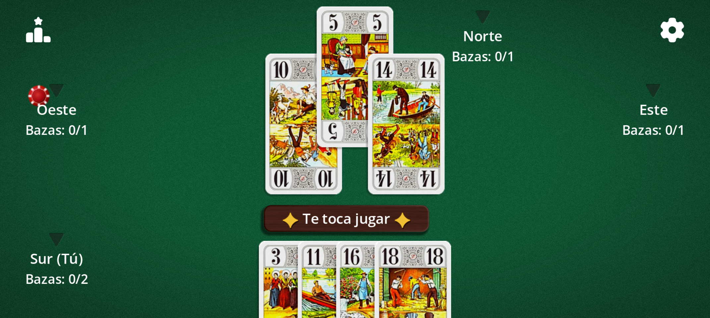

Los grandes clásicos de las cartas, reinventados para el móvil.
CardForgeStudio es un estudio independiente que da una segunda vida a los juegos de cartas tradicionales: reglas fieles, interfaz cuidada y partidas que empiezan con un toque.


El estudio
Solo cartas
Tarot, juegos de bazas y de apuestas: nos centramos en los juegos de cartas clásicos.
Pensado para el tacto
Botones grandes y cartas legibles en cualquier pantalla, del móvil a la tableta.
Tus reglas, tu elección
Cada juego ofrece variantes ajustables para jugar como en casa.
Framework propio
Nuestros juegos usan un framework de cartas desarrollado con Godot: llegarán más títulos.
Nuestros juegos
Tarot Africano
22 cartas y una apuesta que cumplir: anuncia exactamente cuántas bazas vas a ganar, ni más ni menos. Juega contra bots, activa las variantes (a la mexicana, a ciegas, doble 20…) y sé el último en pie.

Pronto llegarán más juegos de cartas clásicos.
¿Listo para jugar?
Tarot Africano está disponible en Google Play.